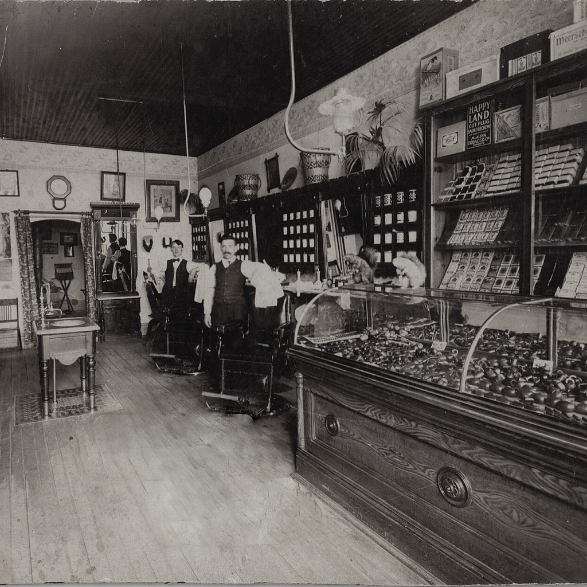
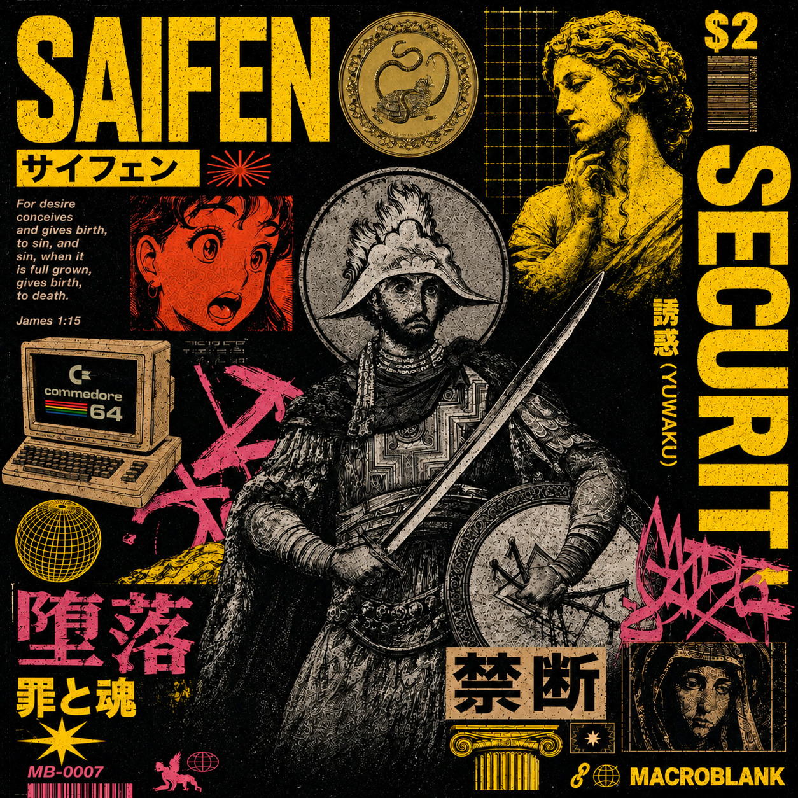
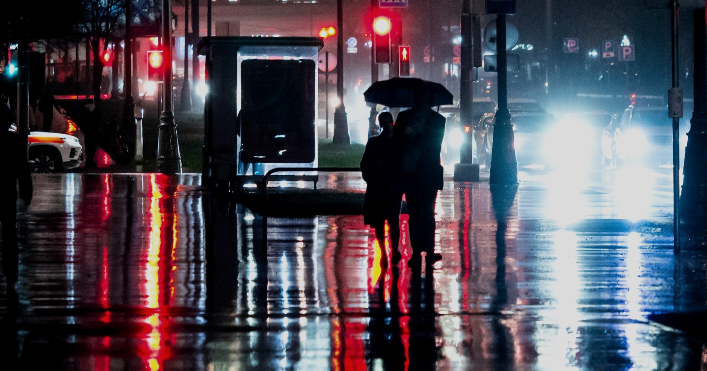
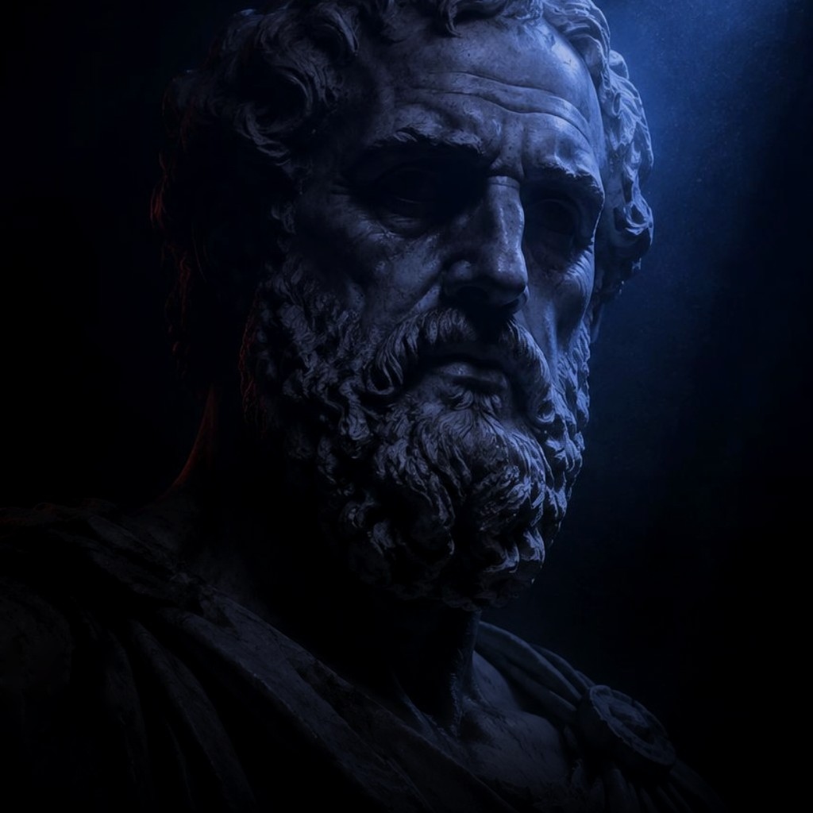

FIG / 01
Lâmina / Decisão
A lâmina
Toda linha é uma escolha. O gesto desenha o que a sombra ainda não revelou.

Duas espadas, um corte.
見えない刃
Livre sobre sua
propriedade e
soberano sobre seus
dados.

SAIFEN / 24HNoite.
Liberdade.
Presença.
[ 02 / Anatomia da lâmina ]
Fragmentos de uma identidade em constante construção.

FIG / 01Toda linha é uma escolha. O gesto desenha o que a sombra ainda não revelou.
A cidade pulsa em dados. Entre um sinal e outro, a ameaça perde o disfarce.

FIG / 03Consenso Fora do Senso Comum. A verdade dura que ninguém quer ouvir, mas todos precisam: Proteção é a propriedade privada = Proteção ao indivíduo = Reconstrução do pacto social